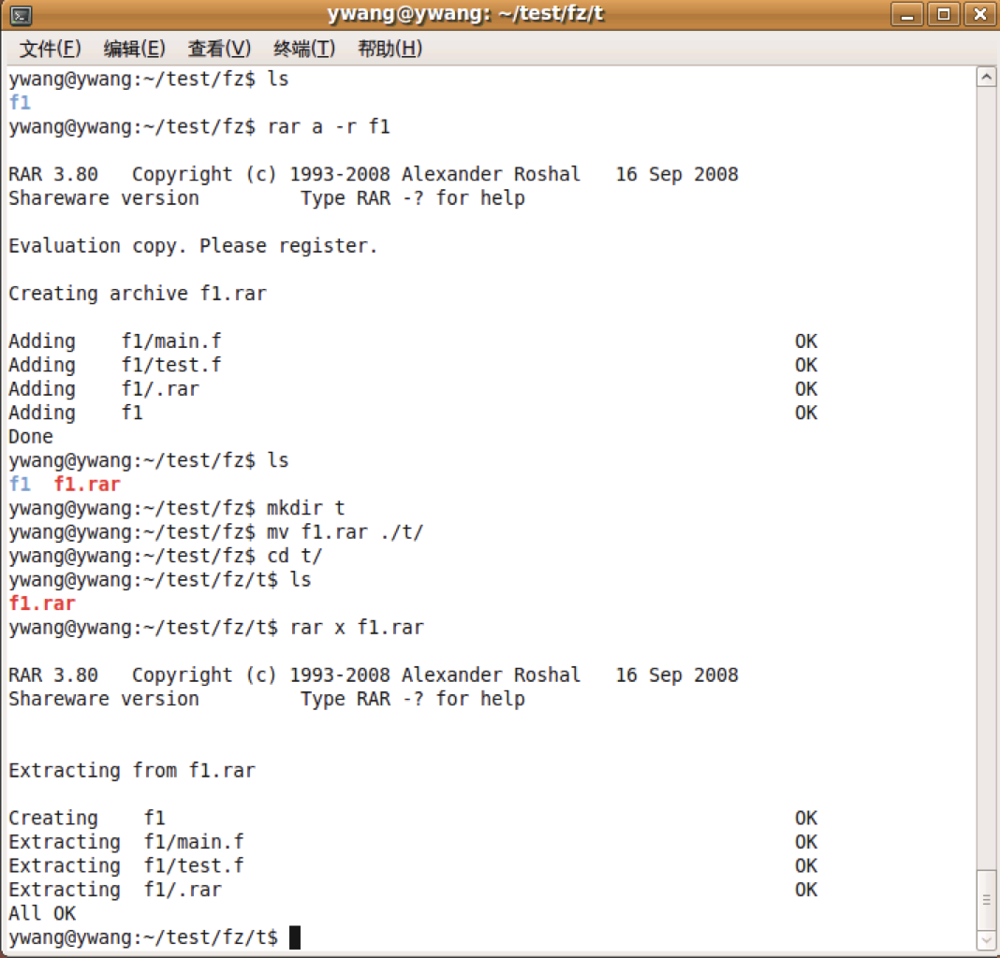
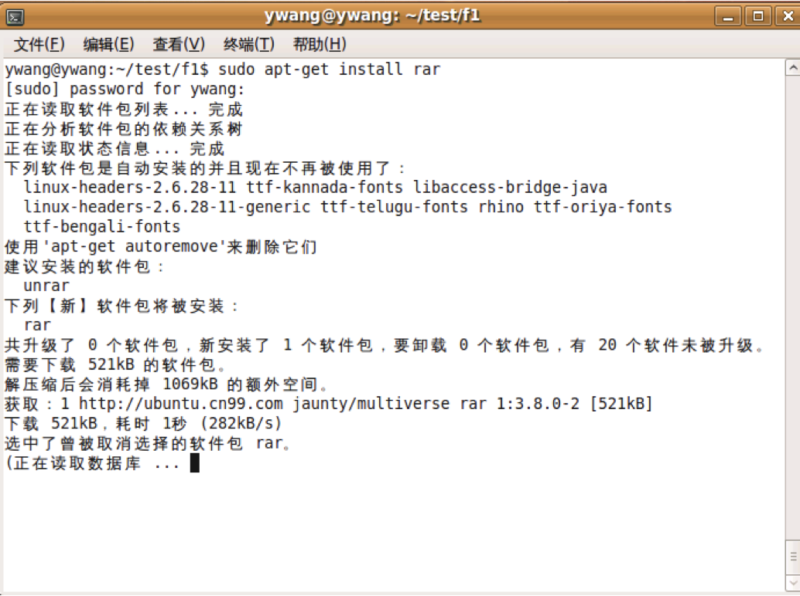
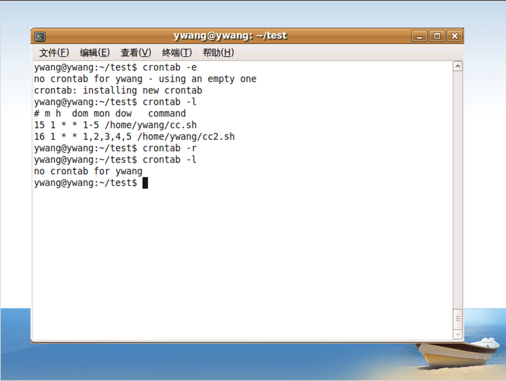
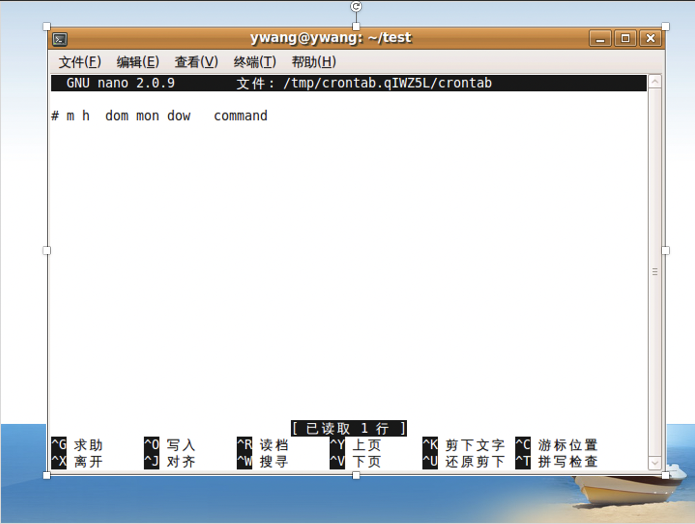
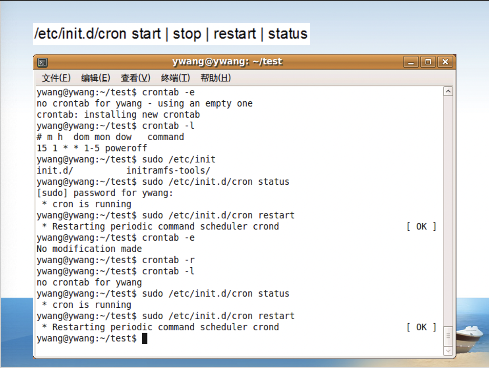
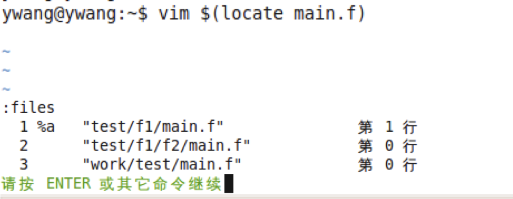
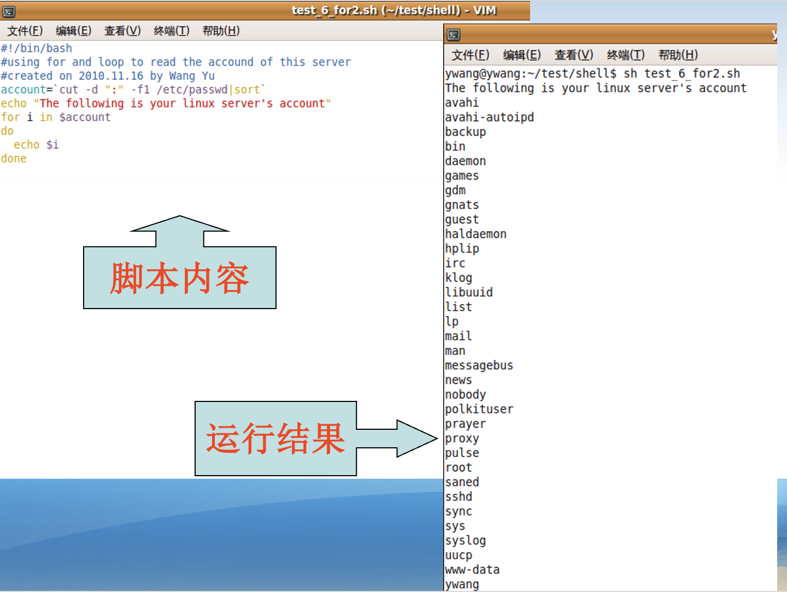

Linux系统与天文软件包IDL（第二部分）
[toc]
12.压缩包管理==（p261）==
| 压缩包类型 | 命令 |
|---|---|
| .tar | tar |
| .gz | gzip,gunzip |
| .bz2 | bzip2,bunzip2 |
| .zip | zip,unzip |
| .rar | rar |
两个基本概念：
打包：归档文件（archive file），文件没有经过压缩，它所使用的磁盘空间是其中所有文件和目录的总和；
压缩：压缩文件（compressed file），占用磁盘空间减少；
- 有损压缩：压缩率比较高，常见的声音、图像、视频压缩基本都是有损的，如：mpeg2，mpeg4，mp3；
- 无损压缩：压缩率降低，数据、文档等等需要保持完全一致的内容。
打包并压缩命令tar：（掌握，p266）
tar [-cvxzjf] 压缩后新生成的文件名 被压缩文件：将多个文件打包并压缩为一个压缩文件，可以打包目录；1
2
3
4
5
6
7参数：
tar -c # create，建立压缩文件
tar -v # visual，压缩过程中显示文件名
tar -x # extract，解压缩
tar -z # 是否同时具有gzip的属性，就是同时以gzip压缩,此时文件名最好命名为*.tar.gz
tar -j # 是否同时具有bzip2的属性，就是同时以bzip2压缩,此时文件名最好命名为*.tar.bz2
tar -f # 使用文件名1
2
3
4
5
6
7
8
9
10
11
12
13
14
15
16
17
18
19
20
21
22
23
24
25
26
27
28
29
30
31
32例子
(base) sdyzzy@SDYZZY-MacBook-Pro study % tar -cf f1.tar file1 file2 # 压缩,但是不显示被压缩文件
(base) sdyzzy@SDYZZY-MacBook-Pro study % tar -cvf f2.tar file1 file2 # 压缩,同时显示被压缩文件
a file1
a file2
(base) sdyzzy@SDYZZY-MacBook-Pro study % tar -cvzf f3.tar.gz file1 file2 # 同时以gzip压缩
a file1
a file2
(base) sdyzzy@SDYZZY-MacBook-Pro study % tar -cvjf f4.tar.bz2 file1 file2 # 同时bzip2压缩
a file1
a file2
(base) sdyzzy@SDYZZY-MacBook-Pro study % ls
f1.tar f3.tar.gz file2 file5
f2.tar f4.tar.bz2 file3 filedir
f3.tar file1 file4
(base) sdyzzy@SDYZZY-MacBook-Pro study % tar -xvf f4.tar.bz2 # 解压缩并显示文件名
x file1
x file2
(base) sdyzzy@SDYZZY-MacBook-Pro study % cp f4.tar.bz2 ../ # 移动文件
(base) sdyzzy@SDYZZY-MacBook-Pro study % cd .. # 切换目录
(base) sdyzzy@SDYZZY-MacBook-Pro ~ % ls # 显示此时目录下的文件
Desktop f4.tar.bz2
Documents gw
Downloads opt
(base) sdyzzy@SDYZZY-MacBook-Pro ~ % tar -xvf f4.tar.bz2 # 解压缩并显示文件名
x file1
x file2
(base) sdyzzy@SDYZZY-MacBook-Pro ~ % ls # 显示此时目录下的文件
Desktop file1
Documents file2
Downloads gw
f4.tar.bz2 opt压缩命令.gz：（掌握，p263）
gzip [-cdtv] [-r] 待压缩文件名：默认情况下会直接将源文件压缩为.gz后缀的文件，源文件就不存在了（对比：.tar方法源文件还在）。同时压缩多个文件后，得到的仍然是多个压缩文件，而不是一个大的压缩包（即没有打包归档。若想归档可以用前面的tar命令）；gunzip 待压缩文件名：将.gz文件解压缩，也有-r参数；参数：
-r：递归处理，将指定目录下的所有文件（包括子目录内的）进行压缩，但是目录本身不变。
1
2
3
4
5
6
7
8
9
10
11
12
13
14
15
16
17
18
19
20
21
22
23
24例子
(base) sdyzzy@SDYZZY-MacBook-Pro study % gzip file1
(base) sdyzzy@SDYZZY-MacBook-Pro study % ls # 源文件不存在了
file1.gz file2 file3 file4 file5 filedir
(base) sdyzzy@SDYZZY-MacBook-Pro study % gunzip file1.gz # 解压缩
(base) sdyzzy@SDYZZY-MacBook-Pro study % ls
file1 file2 file3 file4 file5 filedir
(base) sdyzzy@SDYZZY-MacBook-Pro study % gzip file1 file2 # 多个文件只压缩不归档
(base) sdyzzy@SDYZZY-MacBook-Pro study % ls
file1.gz file3 file5
file2.gz file4 filedir
(base) sdyzzy@SDYZZY-MacBook-Pro study % gunzip *.gz # 利用通配符解压缩大量文件
(base) sdyzzy@SDYZZY-MacBook-Pro study % ls
file1 file2 file3 file4 file5 filedir
(base) sdyzzy@SDYZZY-MacBook-Pro study % gzip filedir # 不能直接压缩目录
gzip: filedir is a directory
(base) sdyzzy@SDYZZY-MacBook-Pro study % cd ./filedir # 在目录下建几个文件
(base) sdyzzy@SDYZZY-MacBook-Pro filedir % touch f1
(base) sdyzzy@SDYZZY-MacBook-Pro filedir % touch f2
(base) sdyzzy@SDYZZY-MacBook-Pro filedir % cd ../
(base) sdyzzy@SDYZZY-MacBook-Pro study % gzip -r filedir # 压缩目录内部的文件（但是目录本身不被压缩）
(base) sdyzzy@SDYZZY-MacBook-Pro study % cd ./filedir
(base) sdyzzy@SDYZZY-MacBook-Pro filedir % ls
f1.gz f2.gz压缩命令.bz2（掌握）：
bzip2、bunzip2：命令与.gz完全相同。压缩命令.zip：
zip [参数] 压缩后新生成的文件名 被压缩文件名：创建.zip后缀的压缩文件；unzip 文件名：解压缩，生成同名目录（子目录内部的压缩文件也解压缩了）；参数：
-r：递归处理，将指定目录下的所有文件（包括子目录内的）进行压缩，但是目录本身不变；
1
2
3
4
5
6
7
8
9
10
11
12
13
14
15
16
17
18
19
20
21
22
23
24
25
26
27
28
29
30
31
32
33
34
35例子
(base) sdyzzy@SDYZZY-MacBook-Pro study % ls
file1 file3 file5 filedir.tar
file2 file4 filedir test
(base) sdyzzy@SDYZZY-MacBook-Pro study % zip -r filedir.zip filedir # 建立压缩文件
adding: filedir/ (stored 0%)
adding: filedir/.DS_Store (deflated 93%)
adding: filedir/file/ (stored 0%)
adding: filedir/file/f2 (stored 0%)
adding: filedir/file/f1 (stored 0%)
adding: filedir/f2 (stored 0%)
adding: filedir/.DS_Store.gz (stored 0%)
adding: filedir/f1 (stored 0%)
(base) sdyzzy@SDYZZY-MacBook-Pro study % ls
file1 file3 file5 filedir.tar test
file2 file4 filedir filedir.zip
(base) sdyzzy@SDYZZY-MacBook-Pro study % mv filedir.zip ./test # 移动该压缩文件至test
(base) sdyzzy@SDYZZY-MacBook-Pro study % cd test
(base) sdyzzy@SDYZZY-MacBook-Pro test % ls
filedir.zip
(base) sdyzzy@SDYZZY-MacBook-Pro test % unzip filedir.zip # 解压缩
Archive: filedir.zip
creating: filedir/
inflating: filedir/.DS_Store
creating: filedir/file/
extracting: filedir/file/f2
extracting: filedir/file/f1
extracting: filedir/f2
extracting: filedir/.DS_Store.gz
extracting: filedir/f1
(base) sdyzzy@SDYZZY-MacBook-Pro test % ls # 解压缩后生成了同名目录
filedir filedir.zip
(base) sdyzzy@SDYZZY-MacBook-Pro test % cd filedir
(base) sdyzzy@SDYZZY-MacBook-Pro filedir % ls # 子目录的文件也解压缩了
f1 f2 file压缩命令.rar：
rar a 被压缩文件名：压缩指定文件；rar a –r 被压缩目录名：压缩指定目录；
rar x 文件名：解压。
13.任务管理==(p500)==
单次任务：
编辑任务：
[sudo] at；查询任务：
[sudo] atq；删除任务：
[sudo] atrm；
1
2
3
4
5
6
7
8
9
10
11
12
13
14
15
16
17
18
19
20
21
22
23
24
25例子
(base) sdyzzy@SDYZZY-MacBook-Pro filedir % date # 查看系统当前时间
2022年10月16日 星期日 00时46分06秒 CST
(base) sdyzzy@SDYZZY-MacBook-Pro filedir % atq # 查询目前任务，发现没有
(base) sdyzzy@SDYZZY-MacBook-Pro filedir % at 1:00 # 创建一个在1:00执行的单次任务
touch testat.md # 该任务是建立一个md文档
<EOF> # 按control + D退出
job 1 at Sun Oct 16 01:00:00 2022
(base) sdyzzy@SDYZZY-MacBook-Pro filedir % atq # 查询当前任务，发现有一个
1 Sun Oct 16 01:00:00 2022
(base) sdyzzy@SDYZZY-MacBook-Pro filedir % atq 1 # 查询任务1
1 Sun Oct 16 01:00:00 2022
(base) sdyzzy@SDYZZY-MacBook-Pro filedir % atrm 1 # 删除任务1
(base) sdyzzy@SDYZZY-MacBook-Pro filedir % atq # 查询目前任务，发现没有了
(base) sdyzzy@SDYZZY-MacBook-Pro filedir % sudo at 1:02 # 超级用户才能执行的任务要用sudo执行
Password:
touch testat.md
<EOF>
job 2 at Sun Oct 16 01:02:00 2022
(base) sdyzzy@SDYZZY-MacBook-Pro filedir % atq
(base) sdyzzy@SDYZZY-MacBook-Pro filedir % sudo atq # sudo创建的任务也要sudo atq才能查询
2 Sun Oct 16 01:02:00 2022
(base) sdyzzy@SDYZZY-MacBook-Pro filedir % sudo atrm 2 # sudo创建的任务也要sudo atrm才能删除
(base) sdyzzy@SDYZZY-MacBook-Pro filedir % sudo atq周期任务：
编辑任务：
crontab -e，进入当前用户的工作表编辑，是常见的vim界面，- 每行是一条命令，命令的构成为时间+动作；
- 时间有：分、时、日、月、周五种；
- 操作符有：
*，取值范围内的所有数字；/n，每过n个单位时间间隔；-，从X到Z；,，散列数字；
查询任务：
crontab -l；删除任务：
crontab -r；==/etc/init.d/cron stsrt | stop | restart | status(第五章——基本命令_4 ppt16)==
Restarting periodic command scheduler crond：重新启动周期任务调度程序crond
  1
2例子
3,15 8-11 */2 * * myCommand # 每隔两天的上午8点到11点的第3和第15分钟执行
第六章·Shell脚本及应用
1.vim简介==(p291)==
vim下有四种操作模式：Normal Mode、Insert Mode、Visual Mode、Ed Mode；
Normal Mode(默认模式)：输入
vim 文件名之后进入的默认模式；左/右/上/下键：光标向左右上下移动；数字+左/右/上/下键：光标向左右上下移动数字指定的行/列数；0：光标移动到这一行的最前面字符处；$：光标移动到这一行的最后面字符处；dd：删除光标所在的那一整行；ndd：n为数字，从光标位置开始，删除向下n行；/str：从光标之后开始搜索字符串str，按n向下重复该查找，按N向上重复该查找；- vim可以跟多个文件名，例如
vim f1 f2 f3。在Ed Mode下:n看下一个文件，:N看上一个文件，:files列出当前vim打开的所有文件；
- vim可以跟多个文件名，例如
Insert Mode（插入模式）：在默认模式下，按
i进入插入模式，在光标所在处开始输入；按ESC退出insert mode，返回normal mode；Ed Mode（命令行模式）：在默认模式下，输入冒号
:进入命令行模式；:w：write，将数据写入硬盘文件中；:w [文件名]：将数据另存为指定文件名的文件；:n1,n2 w [文件名]：将n1到n2行的内容写入新的文件中；:q：quit，退出；:q!：强制退出，且不保存修改；:s：search，搜索并替换；:s/str1/str2：替换当前行的第一个str1为str2；:s/str1/str2/g：替换当前行的所有str1为str2；:n,$ s/str1/str2：替换从第n行开始到最后一行（$）中每一行的第一个str1为str2；:n,$ s/str1/str2/g：替换从第n行开始到最后一行（$）中每一行的所有str1为str2；若n为
.则表示从当前行开始；:% s/str1/str2/：等同于:g/str1/s//str2/，替换每一行的第一个str1为str2；:% s/str1/str2/g：等同于:g/str1/s//str2/g，替换每一行中所有str1为str2；
Visual Mode（可视化模式）：按
Ctrl+v进入可视化模式，用于处理指定的列；移动上下左右键选定内容，按x删除选定内容，按q退出。vim配置文件(p304)：通常在
/usr/share/vim/vimrc或/etc/vim/vimrc；syntax on：根据程序相关语法显示不同颜色；set autoindent：设置自动缩进，按回车后新行与上一行自动对齐；set tabstop=[n]：设置tab键缩进量，n为数字，描述缩进n列；set nu：设置行号；取消行号用set nonu；‘0：回到上次关闭该文件时光标的位置；也可以在vimrc添加：1
au BufReadPost * if line("'\"") > 0|if line("'\"") <= line("$")|exe("norm '\"")|else|exe "norm $"|endif|endif

2.Shell基础设置
Shell是包在内核上的壳，是一个命令解释器，直接作用于内核。
| 内容 |
|---|
| Shell命令 |
| Shell的命令集成 |
| Shell的配置文件 |
| Shell用户环境设定 |
| Shell程序的控制结构 |
| Shell脚本使用 |
1 | 例如 |
bash与cshell不兼容；
更改用户shell：更改/etc/passwd文件，
usermod –s [shell] [user]==(p433)==。查看已安装的Shell解释器：==(p313)==
cat /etc/shells；1
2
3
4
5
6
7
8
9例子
(base) sdyzzy@SDYZZY-MacBook-Pro study % cat /etc/shells # 查看已经安装的Shell解释器
/bin/bash # 安装的Shell及路径
/bin/csh
/bin/dash
/bin/ksh
/bin/sh
/bin/tcsh
/bin/zshBash配置文件：系统级的配置文件存储在
/etc/profile、/etc/bashrc及/etc/profile.d；.bash_history==(p341)==：记录命令历史记录；.bash_logout==(p341)==：退出Shell时要执行的命令；.bash_profile==(p340)==：登入Shell时要执行的命令，只在会话开始时被读取一次；.bashrc==(p341)==：每次打开新的Shell时要执行的命令，别名和函数通常放在该文件中；source [filename]==(p341)==：执行刚修改的文件，使之立即生效，而不必注销并重新登录。
3.命令补充
tab：补全目录或命令；
多命令执行==(p348)==：
;：command1;command2：先执行command1，不管command1是否出错，继续执行command2，用于程序之间没有依赖关系；&&：command1 && command2：只有command1正确运行完毕，才执行command2，用于有依赖关系的程序之间。1
2例子
cd /${解压路径} && ./configure && make && make install
命令替换：
command1 $(command2)或command1 `command2`，注意`是前引号。1
2
3
4例子
vim $(locate main.f) # 用vim操作locate命令运行的结果，即先用locate打开当前目录下所有的main.f文件，然后用vim打开；
vim `locate main.f` # 同上
echo $(PATH)命令延伸：一行命令太多，可以用
\来延伸至下一行继续书写；在脚本中，如果一行命令太长，同样可以用\进行连接；1
2
3
4
5
6
7
8例子
(base) sdyzzy@SDYZZY-MacBook-Pro study % l\
s
file1 file3 file5 filedir.tar
file2 file4 filedir test
(base) sdyzzy@SDYZZY-MacBook-Pro study % pw\
d
/Users/sdyzzy/study通配符==(p344)==：
*：匹配任意多个任意字符；?：匹配任意单个字符（相当于定位符）；[…或-或!]：按照范围匹配单个字符。可以用-给定数字或字母区间（如[1-9]，[a-c]），也可以用列表...直接罗列（如[123]，[acg]）；若加上逻辑非!或者^，则表示非该字符的（含!的要用中括号括起来，例如[!6]，[!23]，[^6]，[^23]）；- 每对中括号
[]和?都只代表一个字符；
1
2
3
4
5
6
7
8
9
10
11
12
13
14
15
16
17
18
19
20
21
22
23
24
25
26
27
28
29
30
31
32例子
rm *.bak # 所有以.bak结尾的文件
rm [!6]* # 所有不是6开头的文件
rm *[!6].bak # 所有以.bak结尾，并且点号之前不为6的文件
ls *.???? # 所有点号后有四个字符的文件
rm *[!6]?.* # 所有点号前倒数第二个字符不为6的文件
ls [13]* # 所有以1或3开头的文件(默认)
ls [1][3]* # 所有以13开头的文件
ls [3-8]* # 所有以3~8之间某个数字开头的文件
ls [a-d,x,y]* # 所有以a,b,c,d,x,y开头的文件
(base) sdyzzy@SDYZZY-MacBook-Pro study % ls
file1 file2 file3 file4 file5 test filed filedir
(base) sdyzzy@SDYZZY-MacBook-Pro study % rm -r filed*
(base) sdyzzy@SDYZZY-MacBook-Pro study % ls
file1 file2 file3 file4 file5 test
(base) sdyzzy@SDYZZY-MacBook-Pro study % ls
f1 f2 f3 file1 file2 file3 test
(base) sdyzzy@SDYZZY-MacBook-Pro study % rm file[1-3]
(base) sdyzzy@SDYZZY-MacBook-Pro study % ls
f1 f2 f3 test
(base) sdyzzy@SDYZZY-MacBook-Pro study % rm ??
(base) sdyzzy@SDYZZY-MacBook-Pro study % ls
test
(base) sdyzzy@SDYZZY-MacBook-Pro study % touch f1 f2 f3 file1 file2 file3
(base) sdyzzy@SDYZZY-MacBook-Pro study % rm ????[12]
(base) sdyzzy@SDYZZY-MacBook-Pro study % ls
f1 f2 f3 file3 test
(base) sdyzzy@SDYZZY-MacBook-Pro study % touch file1 file2 file3 file12
(base) sdyzzy@SDYZZY-MacBook-Pro study % rm ????[1][2]
(base) sdyzzy@SDYZZY-MacBook-Pro study % ls
f1 f2 f3 file1 file2 file3 test管道命令==(p350)==：由管道符号
|来标识；command1 | command2 | command3 | …：将第一个命令运行的结果作为第二个命令的输入，第二个命令运行的结果作为第三个命令的输入，依此类推；1
2例如
ps aux | more # 分屏显示ps aux命令的执行结果cut==(P351)==：用于将每个输入行数据根据指定的字符进行分割；
cut –d "分割标识符" -fN：按分割标识符分割管道命令传入的数据，并取第N分区（N从1开始）；cut -d "分割标识符" -fN 文件路径：按分割标识符直接分割指定文件，并取出第N个分区；cut -cN1-N2：取出该行的第N1-N2个字符；1
2
3
4
5
6
7
8
9例子
(base) sdyzzy@SDYZZY-MacBook-Pro ~ % echo $PATH
/Users/sdyzzy/opt/anaconda3/bin:/Users/sdyzzy/opt/anaconda3/condabin:/usr/local/bin:/usr/bin:/bin:/usr/sbin:/sbin:/usr/local/mysql/bin
(base) sdyzzy@SDYZZY-MacBook-Pro ~ % echo $PATH | cut -d ":" -f1 # 按照:分割，然后取出第1个分区的内容
/Users/sdyzzy/opt/anaconda3/bin
(base) sdyzzy@SDYZZY-MacBook-Pro ~ % echo $PATH | cut -d ":" -f2 # 按照:分割，然后取出第2个分区的内容
/Users/sdyzzy/opt/anaconda3/condabin
(base) sdyzzy@SDYZZY-MacBook-Pro ~ % echo $PATH | cut -c7-12 # 取出第7-12个字符
/sdyzzsort==(P353)==：用于将数据排序，
sort -nru；参数：
不加任何参数时，默认根据字母升序a-z；
-n：根据数字排序；-r：反向排序（默认递增）；-u：重复出现的行，只列出一次；
1
2
3
4例子
cat /etc/passwd | sort # 将列出来的个人帐号排序
cat /etc/passwd | cut -d ":" -f3 | sort -n # 以用户ID排序
cut -d ":" -f1 /etc/passwd | sort # 将/etc/passwd文件的每一行按照:分割并取出各行的第1分区，然后排序
**输入、输出重定向==(p345)==**：
>、>>输出，<、<<读入；command > file：把command命令的输出重定向到文件file中，如果file已经存在，则清空原有文件内容再输出；command >> file：把command命令的输出重定向到文件file中，如果file已经存在，则把信息附加在原有文件后面；command < file：从file读入信息作为command命令的输入；command << C：使command命令读入直到字符C终止；command < file1 > file2：从file1读入信息作为command命令的输入，然后将执行结果输出到file2。
1
2
3
4
5
6
7
8
9
10
11
12
13
14
15
16
17
18
19
20
21
22
23
24
25
26
27例子
(base) sdyzzy@SDYZZY-MacBook-Pro study % ls -l > file1
(base) sdyzzy@SDYZZY-MacBook-Pro study % vim file1
total 0
-rw-r--r-- 1 sdyzzy staff 0 10 20 16:52 f1
-rw-r--r-- 1 sdyzzy staff 0 10 20 16:52 f2
-rw-r--r-- 1 sdyzzy staff 0 10 20 17:06 file1
-rw-r--r-- 1 sdyzzy staff 0 10 20 16:54 file2
drwxr-xr-x 5 sdyzzy staff 160 10 17 19:45 test
~
~
"file1" 8L, 355B
(base) sdyzzy@SDYZZY-MacBook-Pro study % cat > catfile <<"eof" # 输入至catfile，遇到"eof"就停止
this is a file
ok, let's stop
eof
(base) sdyzzy@SDYZZY-MacBook-Pro study % vim catfile
~
this is a file
ok, let's stop
~
~
"catfile" 2L, 30B
sdyzzy@SDYZZY-MacBook-Pro study % cat < catfile
this is a file
ok, let's stop成组命令：以花括号
{}括起来的全部命令可视为语法上的一条命令，出现在管道符的一边（注意左括号“{”后面有一个空格，右括号“}”之前有一个分号“;”）；1
2
3
4
5
6
7
8
9
10
11
12
13
14
15
16
17
18
19例子
{ echo “User Report for `date`.”;who; } | pr
等价于三个语句的组合echo、who、pr
(base) sdyzzy@SDYZZY-MacBook-Pro study % echo “User Report for `date`.” # 单独data命令
“User Report for 2022年10月20日 星期四 21时07分19秒 CST.”
(base) sdyzzy@SDYZZY-MacBook-Pro study % who # 单独who命令
sdyzzy console Oct 15 08:48
sdyzzy ttys000 Oct 20 20:50
(base) sdyzzy@SDYZZY-MacBook-Pro study % echo “User Report for `date`.”;who; #
“User Report for 2022年10月20日 星期四 21时07分33秒 CST.”
sdyzzy console Oct 15 08:48
sdyzzy ttys000 Oct 20 20:50
(base) sdyzzy@SDYZZY-MacBook-Pro study % { echo “User Report for `date`.”;who; } | pr
10 20 21:07 2022 Page 1
“User Report for 2022年10月20日 星期四 21时07分39秒 CST.”
sdyzzy console Oct 15 08:48
sdyzzy ttys000 Oct 20 20:50执行历史命令==(p335)==：执行历史命令是命令替换之一，它以字符
!开头、后随1个或多个字符来定义用户所需的某种类型的历史命令：!!：重复上一条命令，也就是!-1；!-n：重新执行倒数第n条历史命令，!-1就等于!!；!string：重新执行以字符串string开头的最近的历史命令行；!?string?：重新执行最近的、包含字符串string的那条历史命令；!#：到现在为止所输入的整个命令行；- 前面的
history命令。
查找命令所在路径：
which 命令名：到环境变量PATH里面去遍历查找命令所在的路径目录1
2
3
4
5例子
(base) sdyzzy@SDYZZY-MacBook-Pro ~ % which ls
/bin/ls
(base) sdyzzy@SDYZZY-MacBook-Pro ~ % which activate
/Users/sdyzzy/opt/anaconda3/bin/activate命令别名：==(p334)==
alias 命令别名=命令名：对可执行命令起别名；unalias 命令别名：取消alias设置的命令别名。注意：如果命令中有空格，命令要用单引号括起来，如：
alias llss=‘ls -l’。1
2
3
4
5
6
7
8
9
10
11
12例子
(base) sdyzzy@SDYZZY-MacBook-Pro ~ % alias llss=ls
(base) sdyzzy@SDYZZY-MacBook-Pro ~ % llss
Desktop Music
Documents Pictures
Downloads Public
Library test.rtf
Movies test1
杂 test2
(base) sdyzzy@SDYZZY-MacBook-Pro ~ % unalias llss
(base) sdyzzy@SDYZZY-MacBook-Pro ~ % llss
zsh: command not found: llss
4.Shell脚本简介
Shell脚本的特点及用途：==(p388)==
- Shell脚本可认为是将shell命令按控制结构组织到一个文本文件中，批量交给shell执行；
- 不同的Shell解释器使用不同的shell命令语法；
- Shell脚本直接终端下解释执行，不用生成可执行的二进制文件；
- 帮助用户完成特定的任务，提高使用、维护系统的效率；
- 了解Shell脚本可以更好的配置和使用linux；
脚本编译和运行过程：
- 一般步骤：编辑文件、保存文件、赋予文件可执行权限、运行及排错；
- 常用命令：
vi（编辑、保存文件）、ls -l（查看文件权限）、chmod（改变程序执行权限）、直接键入文件名运行文件；
养成良好的脚本书写习惯：==(p391)==
先声明适用哪种shell；
注明脚本的功能、版本信息、作者、文件创建日期等；
每一个大步骤的主要功能；
最好加后缀.sh，以便他人识别；
用vim写代码不要从第一列开始，要留出几列用于注释等；

脚本执行方法：==(p394)==
更改脚本属性，改为可执行属性，例如：
chmod a+x scripts.sh，然后直接./scripts.sh运行脚本；以sh命令来执行脚本的内容，例如：
sh scripts.sh，或者. ./script.sh；1
2
3
4(base) sdyzzy@SDYZZY-MacBook-Pro study % . ./script_study.sh
Programme Starts Here
......
Programme Ends Here.
交互式脚本read：Shell下最简单的交互式命令read。==(p328)==
1
2
3
4
5例子
(base) sdyzzy@SDYZZY-MacBook-Pro study % read wname # 用read命令给wname赋值
sdyzzy
(base) sdyzzy@SDYZZY-MacBook-Pro study % echo $wname
sdyzzy脚本参数传递：使用位置参数，数字多于一位用{}括起来（例如${10}）；==(p399)==
- $0：脚本的文件名；
$1：第一个附加参数；
$2：第二个附加参数；
$n：…… - 输入的参数多于脚本需要的时，只传入需要的位置；
- 输入的参数少于脚本需要的时，传入对应位置的；
1
2
3
4
5
6
7
8
9
10
11
12
13
14
15
16例子
(base) sdyzzy@SDYZZY-MacBook-Pro study % vim script_para.sh
!/bin/bash
This program will define parameters
echo "This script's name is $0"
echo "parameters is $1 $2 $3"
(base) sdyzzy@SDYZZY-MacBook-Pro study % sh script_para.sh # 不输入参数
This script's name is script_para.sh
parameters is
(base) sdyzzy@SDYZZY-MacBook-Pro study % sh script_para.sh a b # 两个参数
This script's name is script_para.sh
parameters is a b
(base) sdyzzy@SDYZZY-MacBook-Pro study % sh script_para.sh a b c d # 多余的参数
This script's name is script_para.sh
parameters is a b c同名传递：相同名称的变量在主程序和函数里面都代表同一个变量。（区别export是全局变量，可以在不同脚本里面用；而这里只是同一个脚本）
1
2
3
4
5
6
7
8
9
10
11
12
13
14
15
16例子
(base) sdyzzy@SDYZZY-MacBook-Pro study % vim f1.sh
!bin/bash
.........
function say()
{
echo $a
}
a=1234
say
a=ustc
say
(base) sdyzzy@SDYZZY-MacBook-Pro study % sh f1.sh
1234
ustc
- $0：脚本的文件名；
5.Shell脚本语法
变量命名规则：==(p318)==
- 变量与变量之间以等号
=来连接，并且等号两边不能直接接空格符； - 变量名称只能是英文字母与数字，但是数字不能做为开头字符（数字开头的是位置参数）；
- 若有空格符，可以使用双引号
“或单引号‘来将变量内容结合起来 - 注意：双引号内的特殊字符可以保有变量特性，但是单引号内的特殊字符则仅为一般字符；
- 必要时需要以字符\来将特殊字符（如：Enter , $ , \ , 空格符 , ‘等）变成一般字符；
- 若该变量需要在其他子程序中起作用，需要以
export来使变量生效，如：export PATH； - 通常，大写字母的变量为系统的预设变量，自定义变量使用小写字母；
双引号
""：内部的特殊字符(如$)可以保留原有性质（例如用$保留变量特性，即如果内部有变量，则可以直接输出变量值，还可以运算加减乘除）;单引号
''：全部当作普通字符串输出；前引号``或者
$()：输出命令运行的结果；反斜杠转义符
\：将特殊字符（例如ENTER、$、\、space、"等）变成一般字符；1
2
3
4
5
6
7
8
9
10
11
12
13
14
15注意HOME是变量，ls是命令
(base) sdyzzy@SDYZZY-MacBook-Pro ~ % echo "HOME"
HOME
(base) sdyzzy@SDYZZY-MacBook-Pro ~ % echo "$HOME"
/Users/sdyzzy
(base) sdyzzy@SDYZZY-MacBook-Pro ~ % echo '$HOME'
HOME
(base) sdyzzy@SDYZZY-MacBook-Pro ~ % echo "ls"
ls
(base) sdyzzy@SDYZZY-MacBook-Pro ~ % echo 'ls'
ls
(base) sdyzzy@SDYZZY-MacBook-Pro ~ % echo `ls`
Desktop Documents Downloads Library Movies Music Pictures Public gw opt
(base) sdyzzy@SDYZZY-MacBook-Pro ~ % echo "check is not print, but $HOME yes"
check is not print, but /Users/sdyzzy yes
- 变量与变量之间以等号
变量声明：==(p328)==
在shell中，所有没有声明的变量默认是字符串形式；
声明变量使用declare指令：
delcare [-afir] var=...-a：定义为数组array；-f：定义为函数function；-i：定义为整数integer；-r：定义为只读readonly（相当于定义了一个常量）；
变量引用：
$变量名，或者${变量名}。变量名多于一个字符建议用后一种；echo 变量名：打印字符串；echo ${变量名}：打印变量值，显示变量内容(每一个输出都要一个$)，空格一并打印；export 变量名=变量值：更改变量值，或定义环境变量(在env里面可以看见，相当于C里面的全局变量)；export 变量名：使变量成为环境变量，可以在其他程序使用；unset 变量名：释放变量。
1
2
3
4
5
6
7
8
9
10
11
12
13
14
15
16
17
18
19
20
21
22
23
24
25
26
27
28
29
30
31
32
33
34
35
36
37例子
(base) sdyzzy@SDYZZY-MacBook-Pro study % a=1
(base) sdyzzy@SDYZZY-MacBook-Pro study % abc="hello"
(base) sdyzzy@SDYZZY-MacBook-Pro study % echo $abc
hello
(base) sdyzzy@SDYZZY-MacBook-Pro study % echo $a bc
1 bc
所有没有声明的变量都默认字符串形式，所以c就成为字符串形式(内容为$a*$b，即2*3)，而不会进行任何算术运算。
(base) sdyzzy@SDYZZY-MacBook-Pro ~ % declare -i a=2
(base) sdyzzy@SDYZZY-MacBook-Pro ~ % declare -i b=3
(base) sdyzzy@SDYZZY-MacBook-Pro ~ % c=$a*$b # 未声明c类型，默认字符串
(base) sdyzzy@SDYZZY-MacBook-Pro ~ % echo $c
2*3
(base) sdyzzy@SDYZZY-MacBook-Pro ~ % declare -i c # 声明c为整型
(base) sdyzzy@SDYZZY-MacBook-Pro ~ % c=$a*$b
(base) sdyzzy@SDYZZY-MacBook-Pro ~ % echo $c
6
另一个例子
(base) sdyzzy@SDYZZY-MacBook-Pro study % cat script_var.sh # 已经创建了一个脚本
!/bin/bash
!This programme is used to "declare" variables.
number1=2*3+5*6
declare -i number2=2*3+5*6
echo "$number1"
echo "$number2"
(base) sdyzzy@SDYZZY-MacBook-Pro study % sh script_var.sh
2*3+5*6
36
declare –r var等价于readonly var
(base) sdyzzy@SDYZZY-MacBook-Pro study % readonly num=5
(base) sdyzzy@SDYZZY-MacBook-Pro study % echo $num
5
(base) sdyzzy@SDYZZY-MacBook-Pro study % num=6
zsh: read-only variable: num数组：BASH只支持一维数组，但元素个数没有限制。
数组创建：有三种方法，不能乱加逗号！（linux下标从0开始，mac从1开始）
array=(var0 var1 var2 var3 ... varN)array=([0]=var0 [1]=var1 [2]=var2 ... [n]=varN)array[0]=var1 arrya[1]=var2 ... array[n]=varN
引用数组元素：
echo ${array[n]}计算数组元素个数： `$